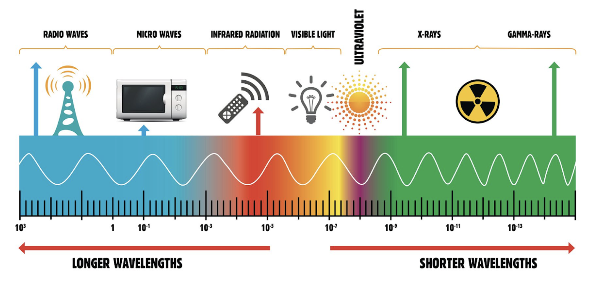

Title of the thing
Quick Def: The generation of heat in an area by letting energy enter, but not letting energy leave.
The greenhouse effect is named after greenhouses which use this trick to create artificially warm environments for plants. Green houses are built out of a special type of plastic which lets visible light through, but absorbs infrared light. Learn More By letting some energy enter, but blocking other energy from leaving greenhouse collects energy. After enough time in the sun the greenhouse eventually reaches a maximum temperature that it levels out at. The more energy that the greenhouse holds, the more it pushes out until a balance is reached between incoming energy and outgoing energy. If we were to add another layer of plastic, the temperature in the greenhouse will increase. Learn More If we took away the original layer the temperature would cool off because infrared light would be able to leave without as much obstruction.
Our atmosphere creates a similar effect. The atmospheric greenhouse effect is why it is LM Electromagnetic Spectrum warm enough for anything to survive. Without the greenhouse effect earth's surface temperature would be around 0 degrees fahrenheit, and humans would have never evolved. [1]